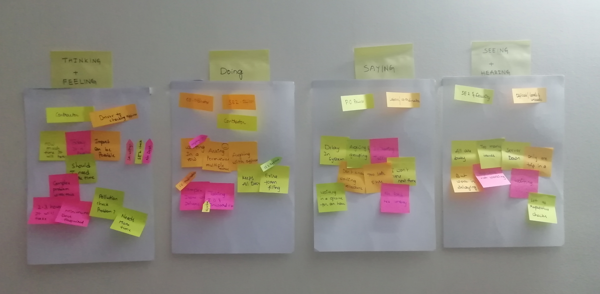
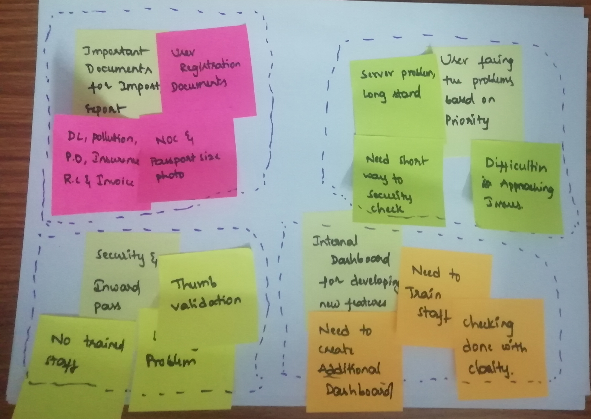
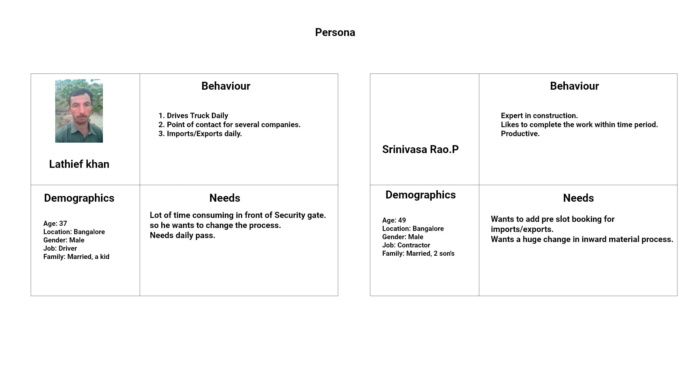
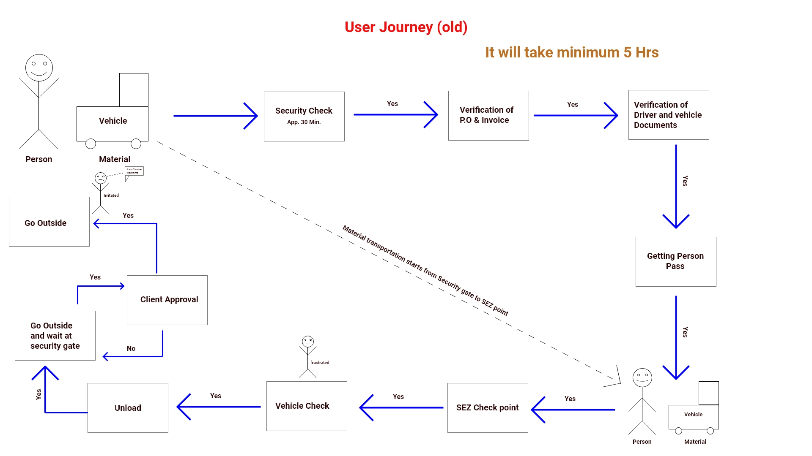
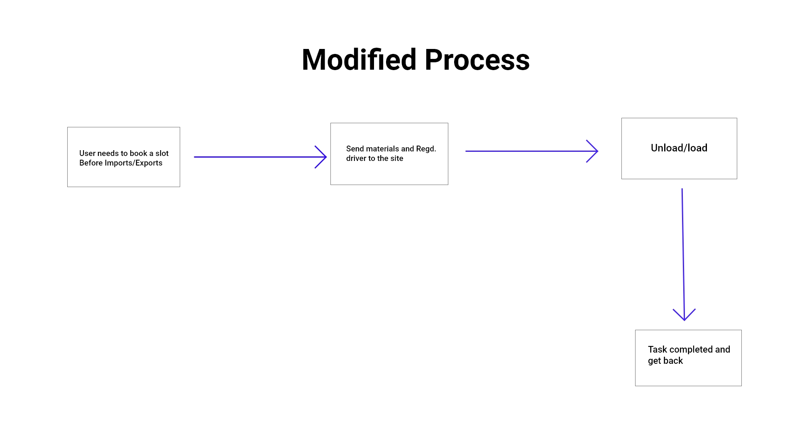
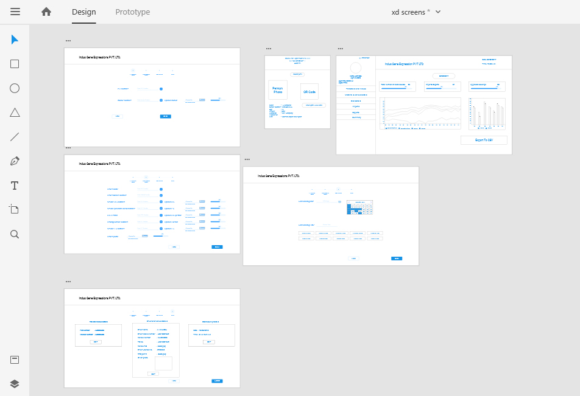
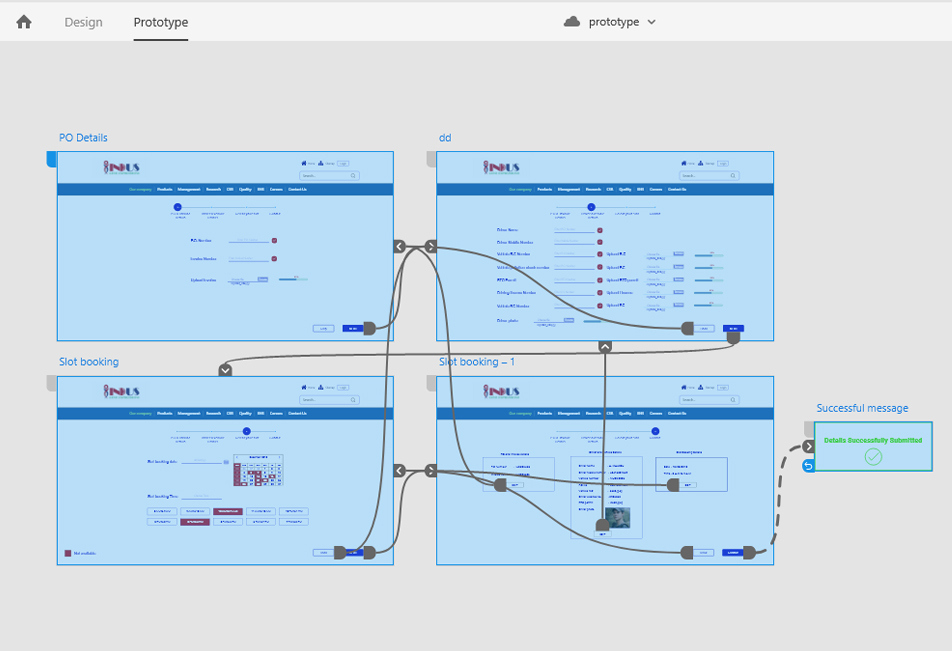
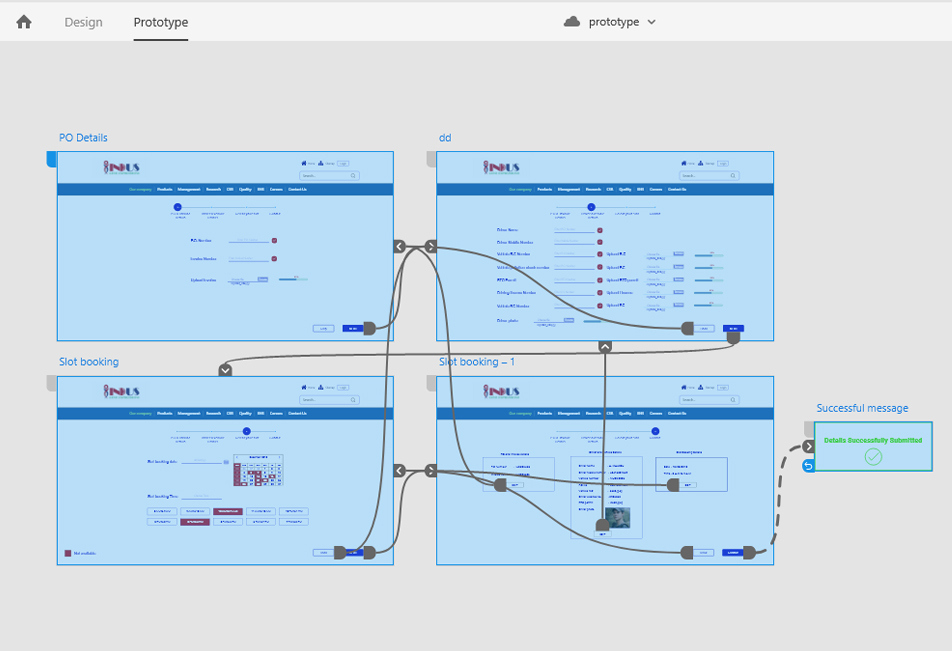

UI/UX,User Research
Adding A New Feature to Company Website
Overview
Description:
Company got SEZ(Special Economical Zone) approval from Government of India. It is a good thing. now company under SEZ. Inside the SEZ area, lot of projects are started, SEZ area having lot of security checks and restrictions for Imports and Exports.If a vehicle wants to enter into the main gate it undergoes lot of checkings, it will take minimum 5 hrs to get entry pass.
Problem:
Security and documents verification consumes a lot of time, productivity becomes very low, Imports/Exports count decreased drastically, loading/unloading/vehicle waiting extra charges added to products.
Solution:
If all the documents verified in online and fixing a particular time to Import/Export it will be very easy for security and manual checking
Outcome:
Adding Pre-slot booking and document verification feature into website, Create a Internal dashboard for document verification
Role:
UX Research, User Testing and wireframes creation.
Research
During the research phase, I sought to understand the current state of the slot-booking features. my intention for the research was to uncover the needs and frustrations of the target user to better understand how to appeal to them
Research goals:
- Define people's common behaviour when booking a slot
- Define people's common behaviour when booking online
- Determine what people like&dislike about slot-booking experience
Secondary Research
First I conducted secondary research to understand user demographics, developments, oppurtunities and challenges in slot-booking service. collected information from artiles and case studies to identify industry standards and user expectations
Primary-Research & competitive analysis
I analyzed some of the similar websites which having slot-booking services and I performed competitive analysis on Biocon, Syngene, Govt. RTO Slot booking sites
My competitive analysis produced the following insights
- Restrict the social media for internal security
- Restrict the users from general purpose
- Include latest UX trends and remove the confusion
- Registration process should be clean and simple
Primary-Research Interviews
Inorder to design a website with great user experience, I had to first identify the needs of the target audience. to better understand and perspective of user. In my case users are contractors, managers, computer operators, drivers. I satdown with 2 persons in each group & ask them about their user experience and habits.
Result assumptions:
- User prefer simple procedure to get access into SEZ area
- User prefer to book a slot in online only
- They want to reduce multiple steps
After completing the Interviews, I wrote down all of the responces on a sticky notes and begain to cluster them based on topic.
 Clustering Interview responces allowed me to discover trends and patterns from which insights could be constructed. through this process I identified several user needs
- Reduce the time at document verification
- Avoid confusion in UI
- Users want quick and easy process
- Simple internal dashboard
Persona creation:
Next i used all of the qualitative data I gathered during the research process to create my user persona
Define and Ideate
Now that I had empathized with target users & identified their needs, I needed to define the solution. I reflected on the on the business goals,user goals & technical considerations to find a happy medium for all stakeholders. once I had identified common goals, I could decide what product features were necessary for the prototype.

Information Architecture
I created a highlevel list of site features to further define and guide the vision for the product prioritizing the features with supporting research created a clear order of execution.to view my new feature matrix Click here Next I conducted card sort to get a sense of how users categorize all the key points
Work Flow:
Old method
Modified user flow
Design and Testing
I began the process of wireframing with sketches of variations of the website new feature page. during the process I through about how the layout and content could be structured to satisfy user and business goals in a technically feasible way. the sketch I chose served as a guide for my digital wireframes.
Low Fidility Wireframes
I created a low fidility prototype of the desktop site in Adobe Xd. I created a UI requirements documents to outline all of the features and elements I wanted to incorporate into the design
High Fidility Wireframes
After several iterations of my low fidility prototype I flushed out details of each page with images,typography, navigation menu etc
 

I asked 5 participants to testout the prototypes usability. the participant pool was comprised of men and women between ages 18 to 55 who used this.
Tasks
- Book a slot
- verify documents in dashboard
- generate Inward pass
Affinity Mapping
I created an affinity map to organize and synthesize the responses and observations I captured using testing. I uncovered insights, which I reconstructed into a list of recommendations. I organized these by priority level (high to low) as a way of determine what needed to be changed immediately and what could be saved for later.
Findings
Overall, users navigated through the website with ease. Confusion most often stemmed from the fact that the prototype is not fully functional. Participants prefer to use a combination of the filters and sorting options when looking for a specific item, and they value having categories for occasions. Participants do not always use the filters in the way intended; perceptions about value influence how they search for an option.
See My prototype in Adobe xd Click here
While the feedback was mostly positive from participants, the prototype is far from perfect. I plan on fleshing out the rest of the pages of the prototype, especially the slot booking features. I plan to continue the iterative cycle of testing and updating the prototype. I will use Zeplin to hand off the design to the developer team when I have made all improvements to the prototype.